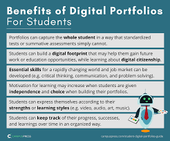

Unpacking Exact Path: What does the learning path experience look like?
There’s no doubt that adaptive technology is changing the landscape of education. We see it in individual classrooms where students are increasingly taking control over the pace in which they learn via online tools, and we see it at the national level with the expanded assessment options that states can partake in under the Every Student Succeeds Act (ESSA). For those educators and students who are leveraging adaptive curriculum to augment the learning process, what does the path for learning really look like?
At Edmentum, we’ve assembled a powerhouse team to help answer that question. Our K–12 math, reading, and language arts program, Exact Path, combines adaptive diagnostic assessments with individualized learning paths to propel learning forward. Underneath the intuitive learning dashboard and sophisticated algorithms, there’s an approach to instruction grounded in pedagogical best practices.
This starts with the work of our in-house curriculum team, made up of highly qualified subject-matter experts and experienced former educators, who continue to develop, test, and review (with current teachers and third-party experts across the country) a growing catalog of rich content and assessment items. The team’s hard work, coupled with the proven evidence base established by our research team and the expert technology brought to life by our top-notch developers, ensures that Exact Path is offering an innovative approach to supporting academic growth.
So, that answers WHO is behind defining that learning journey, but back to our original question: WHAT does the path for learning really look like? Let’s take a closer look at what students experience every time they log in.